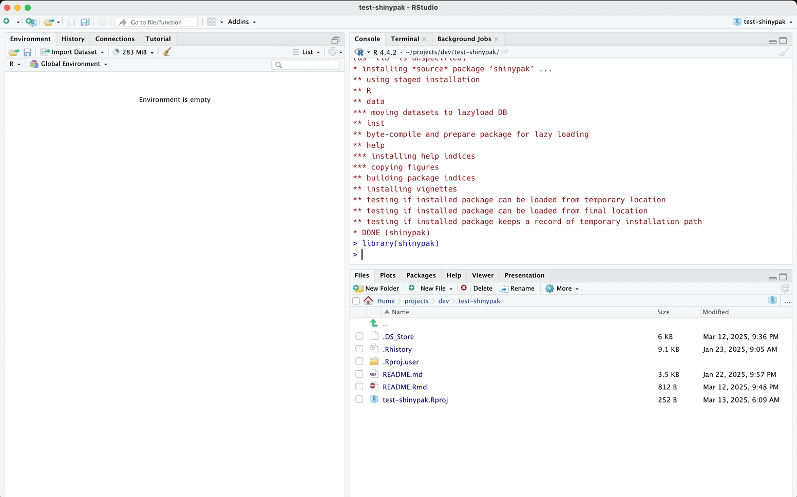

The primary goal of shinypak is to provide easy access all the application examples in sap.1
shinypak also has helper functions for checking the files and folders in a Shiny app-package.
Installation
You can install the development version of shinypak from GitHub after installing remotes:
install.packages('pak')
pak::pak("mjfrigaard/shinypak", force = TRUE)Git/GitHub configuration
shinypak uses the gert package for Git/GitHub management (and assumes authentication was done automatically using the credentials package).2
Available app-packages
The applications in shinypak are from the chapters of the Shiny App-Packages book. A full list of the available apps and topics are available in topic_lookup:
| branch | part | chapter |
|---|---|---|
| 01_whole-app-game | Intro | Whole app game |
| 02.1_shiny-app | Intro | Shiny |
| 02.2_movies-app | Intro | Shiny |
| 02.3_proj-app | Intro | Shiny |
| 03.1_description | Intro | Packages |
| 03.2_rproj | Intro | Packages |
| 03.3_create-package | Intro | Packages |
| 04_devtools | Intro | Development |
| 05_roxygen2 | App-packages | Documentation |
| 06.1_exports | App-packages | Dependencies |
| branch | part | chapter | |
|---|---|---|---|
| 24 | 18_tests-system | Tests | System tests |
| 25 | 20_docker | Deploy | Docker |
| 26 | 21.1_gha-style | Deploy | GitHub Actions |
| 27 | 21.2_gha-shiny | Deploy | GitHub Actions |
| 28 | 21.3_gha-docker | Deploy | GitHub Actions |
| 29 | 22_pkgdown | Deploy | pkgdown |
| 30 | 23_golem | Frameworks | golem |
| 31 | 24_leprechaun | Frameworks | leprechaun |
| 32 | 25_charpente | Frameworks | charpente |
| 33 | 26_rhino | Frameworks | rhino |
Launching apps and app-packages
Launch an application from any section in the book using:
launch(app = "02.3_proj-app")